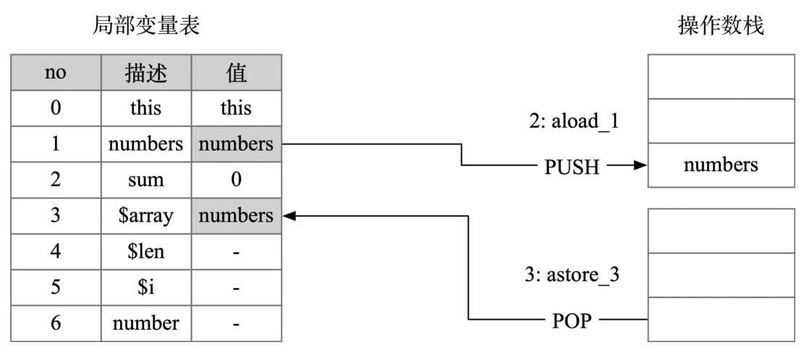
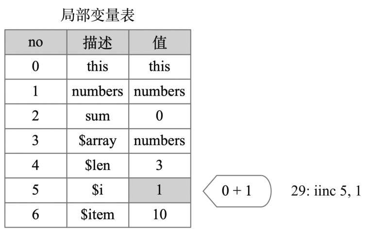

加载和存储指令
加载（load） 和 存储（store） 相关的指令是使用得最频繁的指令，分为load类、store类、常量加载这三种。
- load类指令是将局部变量表中的变量加载到操作数栈，比如iload_0将局部变量表中下标为0的int型变量加载到操作数栈上，根据不同的数据变量类型还有lload、fload、dload、aload这些指令，分别表示加载局部变量表中long、float、double、引用类型的变量。
- store类指令是将栈顶的数据存储到局部变量表中，比如istore_0将操作数栈顶的元素存储到局部变量表中下标为0的位置，这个位置的元素类型为int，根据不同的数据变量类型还有lstore、fstore、dstore、astore这些指令。
- 常量加载相关的指令，常见的有
const类、push类、ldc类。const、push类指令是将常量值直接加载到操作数栈顶，比如iconst_0是将整数0加载到操作数栈上，bipush 100是将int型常量100加载到操作数栈上。ldc指令是从常量池加载对应的常量到操作数栈顶，比如ldc #10是将常量池中下标为10的常量数据加载到操作数栈上。
为什么同是int型常量，加载需要分这么多类型呢？这是为了使字节码更加紧凑，int型常量值根据值 n 的范围，使用的指令按照如下的规则。
- 若n在[-1, 5] 范围内，使用iconst_n的方式，操作数和操作码加一起只占一个字节。比如iconst_2对应的十六进制为0x05。-1比较特殊，对应的指令是iconst_m1（0x02）。
- 若n在[-128, 127] 范围内，使用bipush n的方式，操作数和操作码一起只占两个字节。比如 n 值为100（0x64）时，bipush 100对应十六进制为0 x1064。
- 若n在[-32768, 32767] 范围内，使用sipush n的方式，操作数和操作码一起只占三个字节，比如 n 值为1024（0x0400）时，对应的字节码为sipush 1024（0x110400）。
- 若n在其他范围内，则使用ldc的方式，这个范围的整数值被放在常量池中，比如n值为40000时，40000被存储到常量池中，加载的指令为ldc #i, i为常量池的索引值。完整的加载存储指令见表2-2所示。

字节码指令的别名很多是使用简写的方式，比如ldc是load constant的简写，bipush对应byte immediate push, sipush对应short immediate push。
操作数栈指令
常见的操作数栈指令有pop、dup和swap。
pop指令用于将栈顶的值出栈，一个常见的场景是调用了有返回值的方法，但是没有使用这个返回值，比如下面的代码。
public String foo() {
return "";
}
public void bar() {
foo();
}
对应字节码如下所示。
0: aload_0
1: invokevirtual #13 // Method foo:()Ljava/lang/String;
4: pop
5: return
第4行有一个pop指令用于弹出调用bar方法的返回值。
dup指令用来复制栈顶的元素并压入栈顶，创建对象的时候会用到dup指令。
swap用于交换栈顶的两个元素，如图2-8所示。

还有几个稍微复杂一点的栈操作指令：dup_x1、dup2_x1和dup2_x2。下面以dup_x1为例来讲解。dup_x1是复制操作数栈栈顶的值，并插入栈顶以下2个值，看起来很绕，把它拆开来看其实分为了五步，如图2-9所示。

v1 = stack.pop(); // 弹出栈顶的元素，记为v1
v2 = stack.pop(); // 再次弹出栈顶的元素，记为v2
state.push(v1); // 将v1 入栈
state.push(v2); // 将v2 入栈
state.push(v1); // 再次将v1 入栈
接下来看一个dup_x1指令的实际例子，代码如下。
public class Hello {
private int id;
public int incAndGetId() {
return ++id;
}
}
incAndGetId方法对应的字节码如下。
public int incAndGetId();
0: aload_0
1: dup
2: getfield #2 // Field id:I
5: iconst_1
6: iadd
7: dup_x1
8: putfield #2 // Field id:I
11: ireturn
假如id的初始值为42，调用incAndGetId方法执行过程中操作数栈的变化如图2-10所示。
- 第0行：
aload_0将this加载到操作数栈上。 - 第1行：
dup指令将复制栈顶的this，现在操作数栈上有两个this，栈上的元素是[this, this]。 - 第2行：
getfield #2指令将42加载到栈上，同时将一个this出栈，栈上的元素变为[this, 42]。第5行：iconst_1将常量1加载到栈上，栈中元素变为[this, 42, 1]。 - 第6行：
iadd将栈顶的两个值出栈相加，并将结果43放回栈上，现在栈中的元素是[this, 43]。 - 第7行：
dup_x1将栈顶的元素43插入this之下，栈中元素变为 [43, this, 43]。 - 第8行：
putfield #2将栈顶的两个元素this和43出栈，现在栈中元素只剩下栈顶的[43]， - 第11行：最后的
ireturn指令将栈顶的43出栈返回。
完整的操作数栈指令介绍如表2-3所示。

运算和类型转换指令
Java中有加减乘除等相关的语法，针对字节码也有对应的运算指令，如表2-4所示。
如果需要进行运算的数据类型不一样，会涉及类型转换（cast），比如下面的浮点数1 .0与整数1相加的运算。
1.0 + 1
按照直观的想法，加法操作对应的字节码指令如下所示。
fconst_1 // 将 1.0 入栈
iconst_1 // 将 1 入栈
fadd
但fadd指令值只支持对两个float类型的数据做相加操作，为了支持这种运算，JVM会先把两个数据类型转换为一样，但精度可能出问题。为了能将1.0和1相加，int型数据需要转为float型数据，然后调用fadd指令进行相加，如下面的代码所示。
fconst_1 // 将 1.0 入栈
iconst_1 // 将 1 入栈
i2f // 将栈顶的 1 的int转为float
fadd // 两个float值相加
虽然在Java语言层面，boolean、char、byte、short是不同的数据类型，但是在JVM层面它们都被当作int来处理，不需要显式转为int，字节码指令上也没有对应转换的指令。
有多种类型数据混合运算时，系统会自动将数据转为范围更大的数据类型，这种转换被称为宽化类型转换（widening）或自动类型转换，如图2-11所示。
自动类型转换并不意味着不丢失精度，比如下面代码中将int值“123456789”转为float就出现了精度丢失的情况。
int n = 123456789;
float f = n; // f = 1.23456792E8
相对的，如果把大范围数据类型的数据强制转换为小范围数据类型，这种转换称为窄化类型转换（narrowing），比如把long转为int, double转为float，如图2-12所示。

可想而知，这种强制类型转换的数值如果超过了目标类型的表示范围，可能会截断成完全不同的数值，比如300（byte）等于44。数值类型转换指令的完整列表如表2-5所示。
控制转移指令
控制转移指令用于有条件和无条件的分支跳转，常见的if-then-else、三目表达式、for循环、异常处理等都属于这个范畴。对应的指令集包括：
- 条件转移：ifeq、iflt、ifle、ifne、ifgt、ifge、ifnull、ifnonnull、if_icmpeq、if_icmpne、if_icmplt, if_icmpgt、if_icmple、if_icmpge、if_acmpeq和if_acmpne。
- 复合条件转移：tableswitch、lookupswitch。
- 无条件转移：goto、goto_w、jsr、jsr_w、ret。
以下面代码中的isPositive方法为例，它的作用是判断一个整数是否为正数。
public int isPositive(int n) {
if (n > 0) {
return 1;
} else {
return 0;
}
}
对应的字节码如下所示。
0: iload_1
1: ifle 6
4: iconst_1
5: ireturn
6: iconst_0
7: ireturn
根据我们之前的分析，isPositive方法局部变量表的大小为2，第一个元素是this，第二个元素是参数n，接下来逐行解释上面的字节码。
- 第0行：
iload_1的作用是将局部变量表中下标为1的整型变量加载到操作数栈上，也就是加载参数n。其中iload_1中的i表示要加载的变量是一个int类型。同时注意到iload_1后面跟了一个数字1，它们的作用都是把栈顶元素存入局部变量表的下标为1的位置，它属于iload_＜i>指令组，其中i只能是0、1、2、3。其实把iload_1写成iload 1也能获取正确的结果，但是编译的字节码会变长，在字节码执行时也需要获取和解析1这个额外的操作数。 - 第1行：
ifle指令的作用是将操作数栈顶元素出栈跟0进行比较，如果小于等于0则跳转到特定的字节码处，如果大于0则继续执行接下来的字节码。ifle可以看作“ifless or equal”的缩写，比较的值是0。如果想要比较的值不是0，需要用新的指令if_icmple表示“if int compare less or equal xx”。 - 第4～5行：对应代码“return 1;”, iconst_1指令的作用是把常量1加载到操作数栈上，ireturn指令的作用是将栈顶的整数1出栈返回，方法调用结束。
- 第6～7行：对应代码“return 0;”，第6行iconst_0指令的作用是将常量0加载到操作数栈上，ireturn指令的作用是将栈顶的整数1出栈返回，方法调用结束。
假设 n 等于20，调用isPositive方法操作数栈的变化情况如图2-13所示。

控制转移指令完整的列表如表2-6所示。

for语句的字节码原理
纵观所有的字节码指令，并没有与for名字相关的指令，那for循环是如何实现的呢？接下来以sum相加求和的例子来看for循环的实现细节，代码如下所示。
public int sum(int[] numbers) {
int sum = 0;
for (int number : numbers) {
sum += number;
}
return sum;
}
上面代码对应的字节码如下。
0: iconst_0
1: istore_2
2: aload_1
3: astore_3
4: aload_3
5: arraylength
6: istore 4
8: iconst_0
9: istore 5
11: iload 5
13: iload 4
15: if_icmpge 35
18: aload_3
19: iload 5
21: iaload
22: istore 6
24: iload_2
25: iload 6
27: iadd
28: istore_2
29: iinc 5, 1
32: goto 11
35: iload_2
36: ireturn
为了方便理解，这里先把对应的局部变量表的示意图画出来，如图2-14所示。

- 第0～1行：把常量0加载到操作数栈上，随后通过istore_2指令将0出栈赋值给局部变量表下标为2的元素，也就是给局部变量sum赋值为0，如图2-15所示。

-
第2～9行用来初始化循环控制变量，其伪代码如下所示。
$array = numbers; $len = $array.arraylength $i = 0- 第2～3行：
aload_1指令的作用是加载局部变量表中下标为1的变量（参数numbers）,astore_3指令的作用是将栈顶元素存储到局部变量下标为3的位置上，记为 $array，如图2-16所示。
 图2-16 for循环执行细节（2） - 第4～6行：计算数组的长度，astore_3加载
$array到栈顶，调用arraylength指令获取数组长度存储到栈顶，随后调用istore 4将数组长度存储到局部变量表的第4个位置，这个变量是表示数组的长度值，记为 $len，过程如图2-17所示。epub_31418034_66 - 第8～9行：初始化数组遍历的下标初始值。iconst_0将0加载到操作数栈上，随后istore 5将栈顶的0存储到局部变量表中的第5个位置，这个局部变量是数组遍历的下标初始值，记为 $i，如图2-18所示。

图2-18 for循环执行细节（4）
- 第2～3行：
-
11～32行是真正的循环体
- 第11～15行的作用是判断循环能否继续。这部分的字节码如下所示。
11: iload 5 13: iload 4 15: if_icmpge 35 - 首先通过iload 5和iload 4指令加载
$i和$len到栈顶，然后调用if_icmpge进行比较，如果$i >= $len，直接跳转到第35行指令处，for循环结束；如果$i ＜$len则继续往下执行循环体，可以用如下伪代码表示。
过程如图2-19所示。if ($i >= $len) goto 35;

图2-19 for循环执行细节（5） - 第18～22行的作用是把
$array[$i]赋值给number。aload_3加载$array到栈上，iload 5加载$i到栈上，然后iaload指令把下标为$i的数组元素加载到操作数栈上，随后istore 6将栈顶元素存储到局部变量表下标为6的位置上，过程如图2-20所示。

图2-20 for循环执行细节（6） - 第24～28行：
iload_2和iload 6指令把sum和number值加载到操作数栈上，然后执行iadd指令进行整数相加，过程如图2-21所示。
图2-21 for循环执行细节（7） - 第29行：“iinc 5, 1”指令对执行循环后的 $i加一。iinc指令比较特殊，之前介绍的指令都是基于操作数栈来实现功能，它则是直接对局部变量进行自增，不用先入栈、执行加一操作，再将结果出栈存储到局部变量表，因此效率非常高，适合循环结构，如图2-22所示。
 图2-22 for循环执行细节（8） - 第32行：goto 11指令的作用是跳转到第11行继续进行循环条件的判断。
上述字节码用伪代码表示就是：
整段代码的逻辑看起来非常熟悉，可以用下面的Java代码表示。@start: if ($i >= $len) return; $item = $array[$i]; sum += $item; ++ $i goto @start
由此可见，for（item : array）就是一个语法糖，字节码会让它现出原形，回归它的本质。int sum = 0; for (int i = 0; i < numbers.length; i++) { sum += numbers[i]; } return sum;
- 第11～15行的作用是判断循环能否继续。这部分的字节码如下所示。